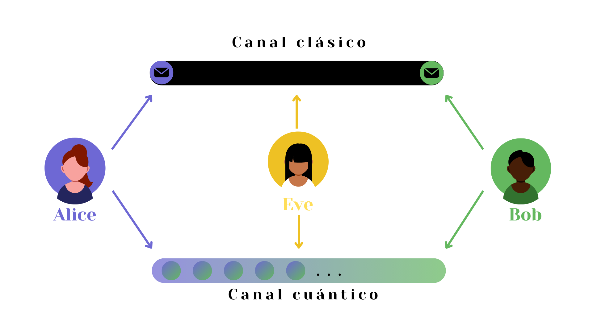
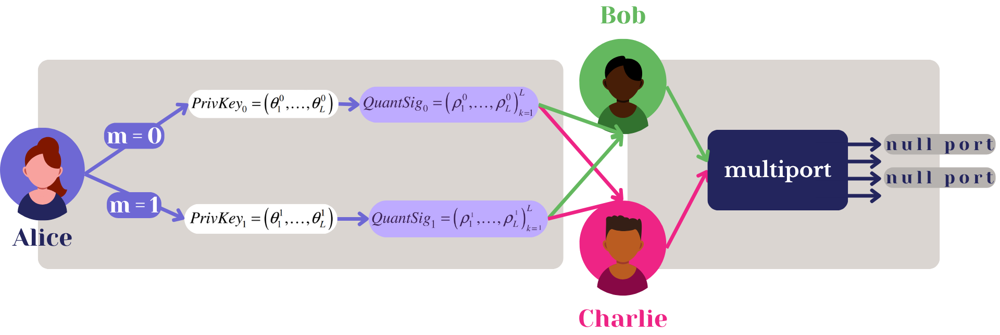
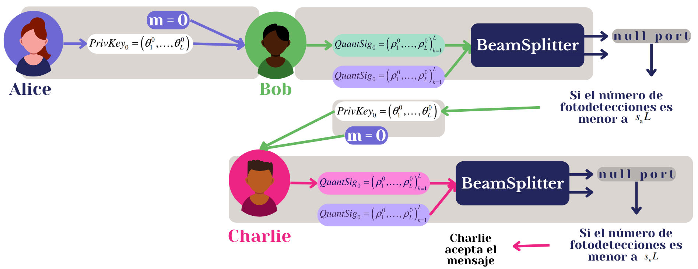

Desde los jeroglíficos tallados en piedra en el Antiguo Egipto hasta los mensajes codificados de la Primera Guerra Mundial, la humanidad ha buscado maneras de proteger sus secretos. Hoy en día, aunque nuestros datos viajan por internet a la velocidad de la luz, la idea sigue siendo la misma: que nadie pueda leerlos sin permiso.
Durante siglos, hemos confiado en sistemas de seguridad tradicionales para mantener a salvo nuestra información. Y han funcionado… hasta ahora. Porque hay un nuevo jugador en el campo: la computación cuántica. Su increíble poder de cálculo podría romper, en cuestión de horas, sistemas que hoy consideramos “irrompibles”.
Pero la buena noticia es que la misma física cuántica también nos da las herramientas para protegernos: la criptografía cuántica.
¿Qué es la criptografía cuántica?
Para entender cómo funciona la criptografía cuántica, primero hay que entrar un poco al mundo cuántico. No te preocupes, no vamos a usar fórmulas, pero sí un poco de imaginación:
Superposición
Imagina que una moneda no es cara o cruz… sino cara y cruz al mismo tiempo hasta que la miras.
Medición cuántica
En el momento en que la observas, la moneda “elige” un lado y se queda así.
Entrelazamiento
Dos monedas (o partículas) que, aunque estén a kilómetros de distancia, se comportan como si una supiera exactamente lo que le pasa a la otra.
Principio de incertidumbre
No podemos saberlo todo sobre una partícula. Si conocemos su posición exacta, no podemos saber exactamente su velocidad (y viceversa).
No clonación
No existe una fotocopiadora cuántica perfecta. Copiar un estado cuántico siempre lo altera.
Polarización de la luz
Los fotones (partículas de luz) pueden “inclinarse” en diferentes direcciones, y esa inclinación puede usarse para codificar información.
En pocas palabras: cualquier intento de espiar o copiar la información deja huellas detectables.
Aplicaciones interesantes
Quantum Key Distribution (QKD)
La Distribución de Claves Cuánticas permite que dos personas, a las que llamaremos Alice y Bob, compartan una clave de cifrado de forma que si alguien intenta espiarlos, puedan detectarlo.
Uno de los protocolos más famosos es el BB84 (1984), que usa fotones con diferentes polarizaciones para enviar bits de información.

Canales de comunicación del protocolo BB84.
Permite generar una clave secreta entre Alice y Bob usando qubits transmitidos en un canal cuántico. Alice codifica cada bit en una base (diagonal o recta), y Bob mide cada qubit con una base elegida al azar.
Si usan la misma base, Bob recupera el bit original; si no, su probabilidad de acierto es del 50%. Posteriormente, comparan las bases por un canal clásico y conservan solo los bits en los que coincidieron. Cualquier intento de interceptación (por ejemplo, de Eve) altera los resultados y puede ser detectado.
Quantum Digital Signatures (QDS)
Las firmas digitales sirven para verificar que un documento o mensaje realmente viene de quien dice enviarlo.
El problema es que los métodos tradicionales dependen de que ciertas operaciones matemáticas sean difíciles para las computadoras actuales… pero un computador cuántico podría resolverlas rápidamente.
La versión cuántica, usa principios físicos que las hacen seguras incluso ante trampas cuánticas. Así, no solo se verifica el origen de un mensaje, sino también que no haya sido alterado en el camino.
A pesar de que existen un par de propuestas de esquemas de esta aplicación, un grupo de investigadores de la Institute of Photonics & Quantum Sciences, School of Engineering and Physical Sciences, Heriot-Watt University en Edinburgo, decidieron experimentar físicamente (con cables y luz) un esquema dónde:

Paso 1: Distribución.
Alice genera claves privadas y las convierte en secuencias de estados coherentes (QuantumSig). Envía una copia a Bob y otra a Charlie para ambos posibles mensajes (m = 0, 1). Ambos almacenan las secuencias en memoria cuántica. (Paso 1)

Paso 2: Autenticación y Verificación.
Y, para firmar un mensaje, Alice envía el mensaje m y la clave correspondiente. Bob verifica autenticidad comparando los estados recibidos con los generados usando PrivKeyₘ. Luego reenvía a Charlie, quien verifica el mensaje con su propia copia. (Paso 2)
Implementaciones
Mi profundo interés por la criptografía cuántica me llevo a buscar cómo lograr replicar estas ideas y protocolos que parecen muy teóricas, así que decidí investigar cómo hacerlo: Utilicé Python y una librería muy famosa cuántica (Pennylane y StrawberryFields) para lograrlo.
Mis resultados fueron exactamente los esperados:
BB84
En 500 pruebas: La información que podía obtener Eve fue prácticamente nula.
QDS
Los receptores detectaron coincidencias muy precisas, confirmando la autenticidad de los mensajes y minimizando el riesgo de falsificación.
¿Y después?
Aunque todavía hay retos —como la distancia máxima que puede cubrir un cable de fibra óptica—, la criptografía cuántica se perfila como un pilar de la ciberseguridad del futuro. Desde proteger datos médicos hasta resguardar transacciones financieras y comunicaciones gubernamentales, sus aplicaciones son enormes.
La próxima vez que escuches “computación cuántica” en las noticias, recuerda: no solo es poder de cálculo, también es el arte de guardar secretos como nunca antes.
Sobre la autora
Giulia López Maldonado
Soy estudiante de la Licenciatura en Inteligencia Artificial en la UAEM, apasionada por la tecnología y la ciencia en todas sus formas. Desde que descubrí la criptografía, me fascinó cómo los algoritmos y los códigos pueden proteger información y transformar la manera en que nos comunicamos. Esta curiosidad me llevó a explorar también el mundo de la computación cuántica, un área que combina misterio, matemáticas avanzadas y posibilidades infinitas. Me considero una persona inquieta y entusiasta, siempre buscando aprender y experimentar con nuevas ideas, proyectos y herramientas que me permitan crecer tanto académica como personalmente.